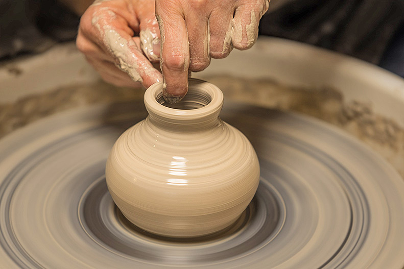

Different types of Clay
Air Dry Clay
- Easiest for beginners
- Can be found at most all craft stores
- Does not need to be oven-baked or kiln-fired
Oven Bake Clay
- Similar to air dry clay, but requires to be baked to fully dry
- Many people use this for jewlery making
- Easy to do at home if you have an oven, or art ovens are usually fairly cheap
Kiln-Fired Clay
- Must be filn-fired to comletely dry
- Can be glazed to make foodsafe
- Many art studios will allow you to ue their kiln for a fee
